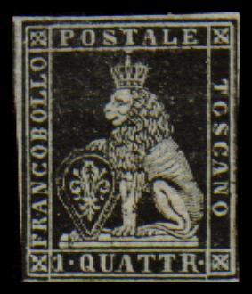
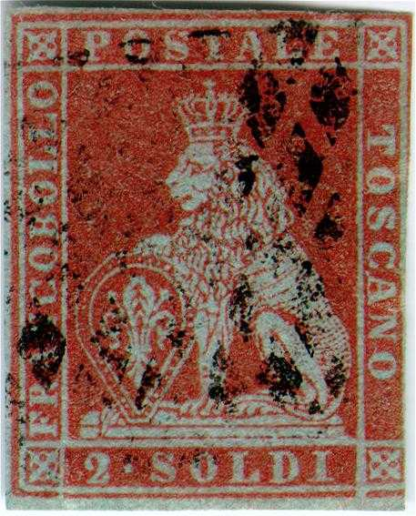
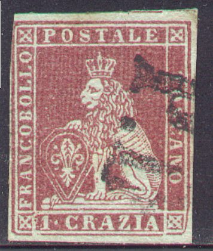
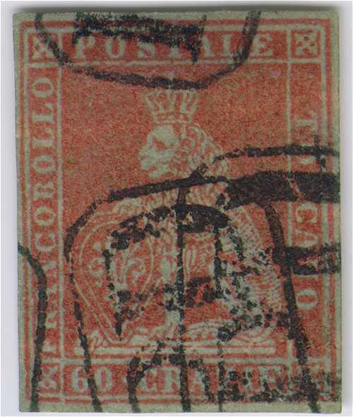
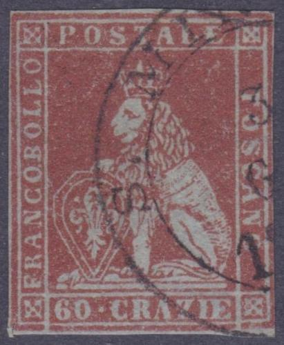
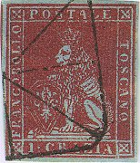
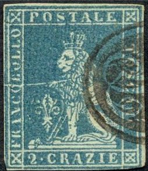
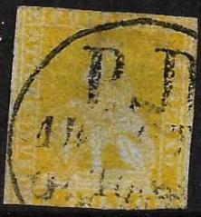
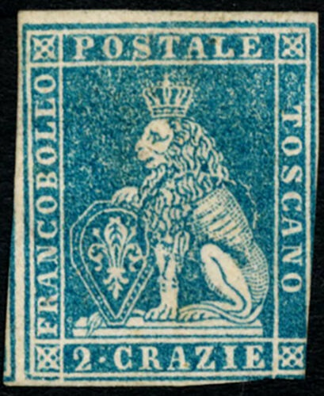

{kind=link}


{kind=link}

{kind=link}



{kind=link}



{kind=link}

Toscana - Toscane - Toskana
Return To Catalogue - Tuscany 1851 issue, forgeries, part 1 - Tuscany 1851 issue, forgeries, part 2 - Tuscany 1851 issue, forgeries, part 3 - Tuscany 1851 issue, forgeries, part 4 - Tuscany 1851 issue, Fournier forgeries - Tuscany 1851 issue, more Fournier forgeries - Tuscany 1851, Oneglia(?) forgeries - Tuscany 1860 issue and miscellaneous - Italy
Note: on my website many of the
pictures can not be seen! They are of course present in the catalogue;
contact me if you want to purchase the catalogue. .
Currency: 60 Quattrini = 20 Soldi = 12 Crazie = 100 Centesimi = 1
Lire
With thanks to Lorenzo, (check his excellent website on Italian States! http://www.antichistati.com/800/index800.html) who kindly set some of his images at my disposal.
An duchy in Italy until 1860 when it was united with Sardinia. The capital is Florence
(Firenze).
Currency: 1 Lira = 60 Quattrini = 20 Soldi = 12 Crazie = 100
Centesimi
    
1 quattr black 1 Soldo yellow 2 Soldi brown 1 Crazia red 2 Crazie blue (also greenish blue) 4 Crazie green 6 Crazie blue 9 Crazie purple 60 Crazie brown
For the specialist: there are two different issues of theses stamps with different watermarks; in 1851 the watermark was a crown (not the whole crown can be seen on 1 stamp) and in 1853 the watermark changed to wavy lines:
(Watermark crown and wavy lines)
The 60 c is extremely rare, both used and unused. The 2 s was not used very much and was suppresed in 1852 (it is also a very rare stamp). Most common are the 1 c, 2 c, 4 c and 6 c. The distance between the stamps is less than 1 mm, it is therefore difficult to find stamps with all four margins intact. The 2 s and 60 c were officially reprinted in 1866 on original watermarked paper; the 60 c has the "60 CRAZIE" too large and colour of both reprints is too brown (according to Album Weeds).
Value of the stamps |
|||
vc = very common c = common * = not so common ** = uncommon |
*** = very uncommon R = rare RR = very rare RRR = extremely rare |
||
| Value | Unused | Used | Remarks |
| With watermark 'Crown' | |||
| 1 q | RRR | R | |
| 1 s | RRR | RR | |
| 2 s | RRR | RRR | on blue paper only |
| 1 c | RR | *** | |
| 2 c | R | *** | |
| 4 c | RR | *** | |
| 6 c | RR | *** | |
| 9 c | RRR | R | |
| 60 c | RRR | RRR | on blue paper only |
With watermark 'Wavy Lines' |
|||
| 1 q | RR | RR | |
| 1 s | RRR | RRR | |
| 1 c | RR | *** | |
| 2 c | R | *** | |
| 4 c | RRR | *** | |
| 6 c | RR | *** | |
| 9 c | RRR | RRR | |
Proofs:
My Sassone 1969 catalogue states that proofs of the 1 s, 2 c, 4 c
and 6 c exists on whit, thick smooth paper, without watermark.
Some of these proofs exist with trial cancels.
Special cancels:




(Reduced size)


"FIRENZE" circle with date and townname below in a
ribbon. Also a similar cancel in red.
Townname double circle cancel with date in the center

(Cancel of the town of Seravezza)

'PD' in a rectangle with rounded corners.

Firenze cancel, not sure if the one on the 2 Soldi is genuine.

Letter with Livorno fancy cancel.

"P" cancel, could be bogus, or part of a 'P.D.' cancel.


"P.D." cancels

A "PER CONSEGNA" cancel

Railway cancel "SA FA" in an ellipse for "Strada
Ferrata"



A private cancel "MORPURGO BIANCHINI LIVORNO" (very
rare)

Not sure what is this, there is a ring printed in the center of
the stamp?
{kind=link}
{kind=link}
{kind=link}
{kind=link}